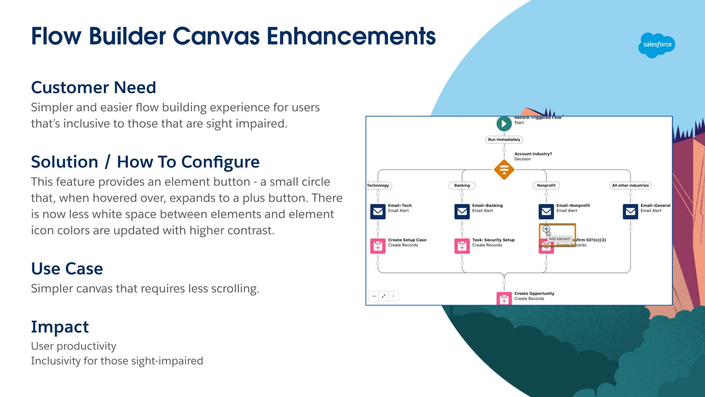
The Process
As a Software Engineer in Salesforce, my responsibilities start when I receive feature deliverables by the User Experience team.
UX Deliverables
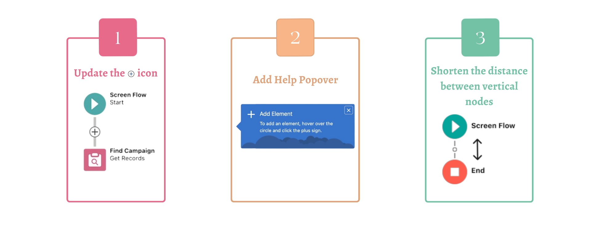
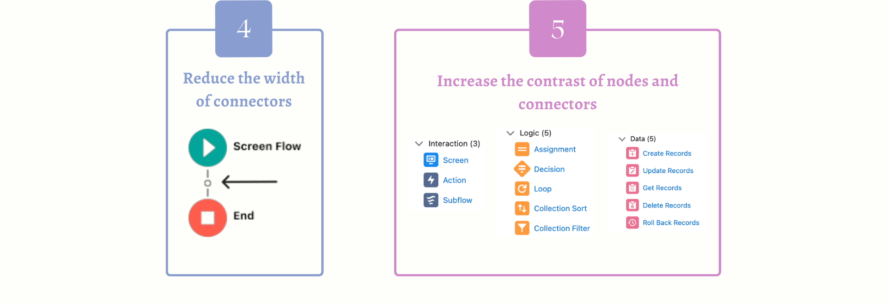
I began by conducting a spike, a time-boxed research into the codebase to explore potential solutions and identify technical challenges. This research would conclude with a detailed presentation of my findings and a demo of proof-of-concepts to my team.
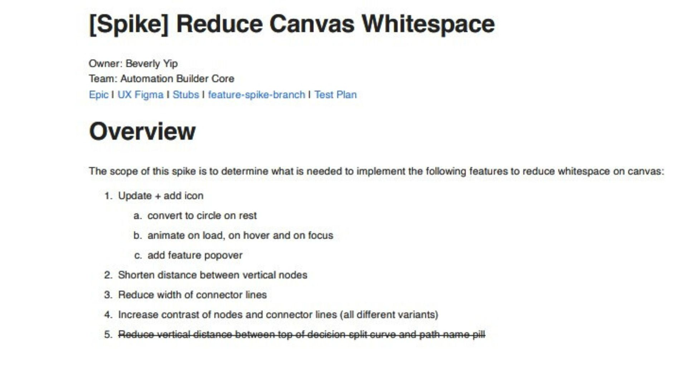
Deliverable 1
Update The  Icon
Icon
The first noticeable enhancement was changing the icon to a  icon that enlarges to the
icon that enlarges to the  icon when interacted with.
icon when interacted with.
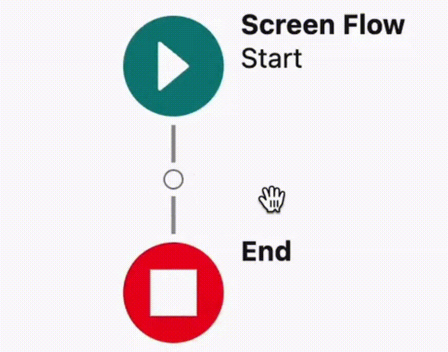
With this update, there were four animation cases to consider.
Icon Animation Cases
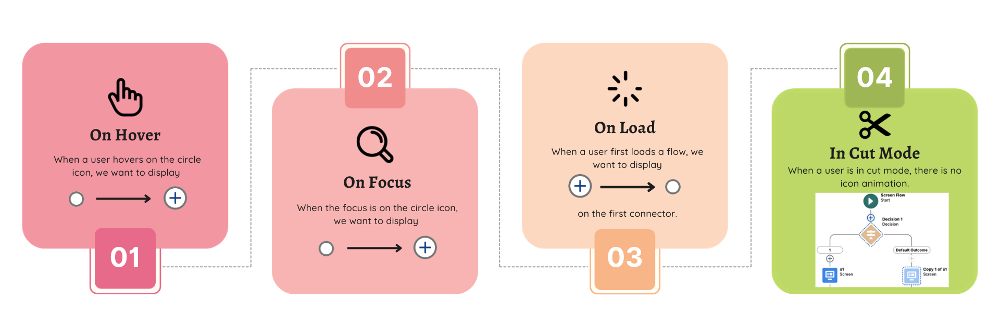
Deliverable 2
Add Help Popover
With the significant visual update, we wanted to provide users a help pop up that explains how one can interact with the new interface and ensure a smooth transition in user experience.

Popover Requirements
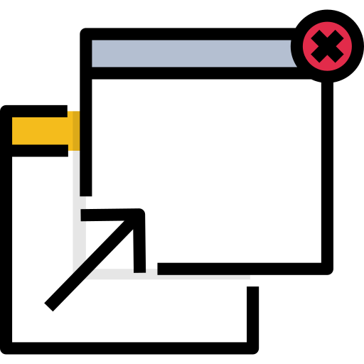
Appear on the right of the circle icon.
Yikes, popover road bump!
I spent a week researching this popover component as it was a separate library that my team had not utilized before. It involved registering the component within our codebase, and enabling security keys in a separate Java file before we could use the component.
Fortunately, the component’s library was also extensive and implementing requirements 1, 3 and 4 went smoothly once I identified the library’s documentation and determined which lines of code needed tweaking.
The real issue was in implementing requirement 2 - keeping the popover anchored.
01
When the flow was dragged, the popover didn’t follow. This didn’t meet the requirements of keeping the popover anchored to the first circle icon.
02
Certain Flow types opened a menu that shifted the circle icon downward. The placement of the popover would be misaligned relative to the circle icon as the popover was getting rendered before the opening animation began.
03
When the flow was dragged, the popover didn’t follow. This didn’t meet the requirements of keeping the popover anchored to the first circle icon.

An Example of Issue #1
Multiple attempts at a solution were made to resolve the three issues in keeping the popover anchored. However, no solution could not solve all three issues simultaneously.
Eventually, I sought the guidance of the Salesforce In-App Guidance team, and together, implemented an algorithm that keeps the popover anchored with every window resize and shift in Flow. This same algorithm has become a core piece in ensuring that the Flow remains adaptable to diverse media sizes and user interactions.
Panels were also adjusted such that they would never overlap with the popover.
Deliverable 3
Shorten The Distance Between Vertical Nodes
This feature involved a simple change in variable value in a file that calculated all element configurations. After spiking this feature, I found two methods of implementation that my team and I could discuss and finalize on.
1 - Modify a key variable, but manually update other impacted variables along the way or
2 - Modify each impacted variable respectively depending on connector type and variant, while keeping the key variable constant.
Tricky Terrain
For a change that impacted the entire Flow, it was imperative to ensure compatibility with all connector types - whether straight, curved, or with arrowed ends.
Additionally, we had to consider special nodes with unique shapes in terms of height and the spacing between nodes.
For instance, take the Decision element, a diamond-shaped orange icon. Its height exceeds that of most other elements, so even a slight reduction was clearly noticeable.
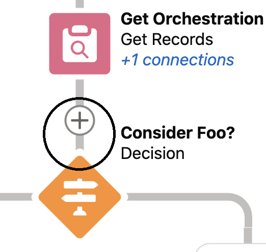
Before
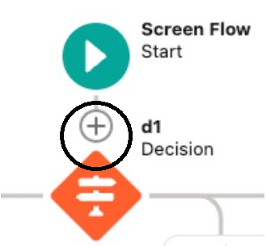
After
This height disparity became even more pronounced in cut mode, where we also had to incorporate an extra border around specific elements.
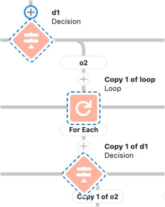
After multiple feedback sessions and multi-team discussions with UX and my team, an acceptable variable value was agreed upon that could meet both the feature requirement and accommodate unique cases like the Decision element.
Deliverable 4
Reduce The Width Of Connectors
Part of the move towards improving the canvas interface was reducing the overall width of the connectors. This also involved a small change in variable value.
But wait!
During my research, I found that the previous requirement (Reduce The Width of Connectors) and this needed to be completed concurrently as one change without the other would result in interrupted and incohesive connector lines.
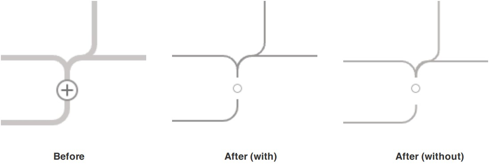
Hence, I decided that these two requirements had to be combined into a single code release.

What the UX team didn’t take into consideration was that Flow Builder had a lot of connectors with different shapes and forms. During implementation, I also took the initiative to ensure that all connector widths were standardized across all impacted files. This became an added criterion.
Deliverable 5
Increase The Contrast Of Nodes And Connectors
Prior to this update, Flow Builder displayed colors that were not WCAG 2.1 compliant. The UX team presented me with a list of UX deliverables necessary to address and resolve the color contrast issue.

With these requirements, I began identifying all areas of the codebase that were impacted and required modifications. The code was straightforward, but its application demanded consideration of all node and connector variations. Thus, before embarking on the changes, I needed to thoroughly investigate the source code for these variants and all their possible use cases.
This feature adjustment was particularly notable for me. Throughout my career, it was among the few tasks I undertook that highlighted a distinct interface-driven customer need. Addressing this made a direct positive impact on both productivity and inclusivity for its users.
Drum Roll, Please... The Finished Product
On the left, you'd see what Flow Builder was before the changes. On the right, you'd see how the Flow Builder canvas has improved after the changes.
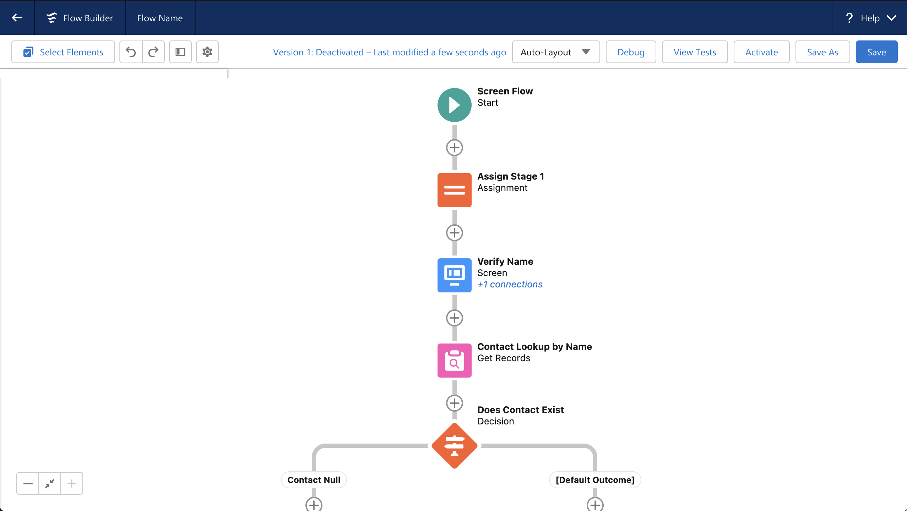
Previous Flow Builder
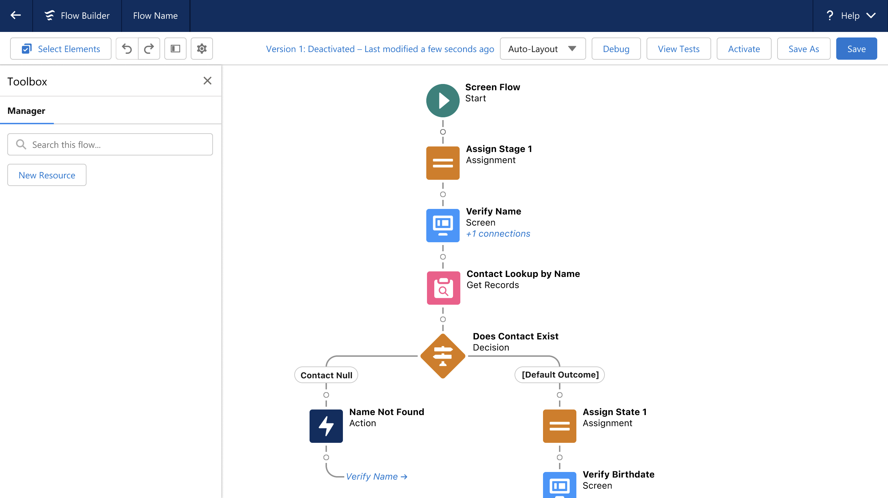
Updated Flow Builder
The newly-upgraded canvas layout that boasts a more compact view with improved accessibility standards received praise during its Summer ‘23 release. While Salesforce product releases are commonly discussed in quarterly articles and blogs, this particular feature stood out. It captivated many users right from the get go and was subsequently highlighted as one of the top features of that Salesforce release.
Phew, What A Learning Journey!
When I first took on the leadership role for this project, I grappled with self-doubt, often questioning my capabilities as the youngest Software Engineer on a seasoned team. My experience was marked by daily challenges, collaborative brainstorming and intensive problem-solving.
My manager and mentor played crucial roles in encouraging me to stay curious. I'll never forget the response I received to my apprehension about asking questions, which completely transformed my outlook on speaking up.
“You never know if someone also has the same question as you or if your question might offer a new perspective. By asking your question, you could be helping someone else too.”
Looking back at the successful impact of the feature on user productivity and accessibility, I'm deeply thankful for my team's unwavering support that fueled my confidence and determination to lead the project to its success.
Thanks for scrolling!
If you're interested, check out this other case study I did on improving accessibility and the resource selection experience in Salesforce's Flow Builder.